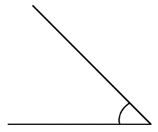

Теория
Точка, луч, отрезок, прямая
- Точка — это абстрактный объект, не имеющий измерительных характеристик. Точка не имеет ни высоты, ни длины, ни радиуса. Точка чаще всего обозначается заглавной латинской буквой.
- Отрезок — это часть прямой, которая ограничена двумя точками, то есть она имеет и начало и конец, а значит можно измерить её длину. Длина отрезка — это расстояние между его начальной и конечной точками.
- Луч — это часть прямой, которая имеет начало, но не имеет конца, её можно бесконечно продолжать только в одну сторону
- Прямая линия — это линия которая не искривляется, не имеет ни начала, ни конца, её можно бесконечно продолжать в обе стороны. Даже когда виден небольшой участок прямой, предполагается, что она бесконечно продолжается в обе стороны. Обозначается маленькой латинской буквой или двумя заглавными латинскими буквами.
Прямые могут быть:
- пересекающимися, если имеют общую точку. Две прямые могут пересекаться только в одной точке.
- перпендикулярными, если пересекаются под прямым углом (90°).
- параллельными, если не пересекаются, не имеют общей точки.
Запомни:
- Через одну точку можно провести сколько угодно прямых.
- Через любые две точки можно провести прямую, и притом только одну.
- Две прямые либо имеют только одну общую точку, либо не имеют общих точек
Углы
- Угол – это геометрическая фигура, состоящая из точки и двух лучей, исходящих из этой точки. Лучи называют сторонами угла, их общее начало - вершиной.
Углы бывают:
- Острыми (меньше 90°)
 - Прямыми (= 90°)
- Тупыми (>90°)
- Развернутыми (=180°)
Вертикальные углы:
Два угла называются вертикальными, если стороны одного угла являются продолжениями сторон другого. Но это очень непонятное определение из учебника, давайте сформулируем все проще:
При пересечении двух прямых образуются 4 угла, то вертикальными будут называться те, которые лежат напротив друг друга.
Запомни:
- Вертикальные углы равны. ∠1 =∠3, ∠2 =∠4
Смежные углы
Два угла, у которых одна сторона общая, а две другие являются продолжениями одна другой, называются смежными.
Еще одно сложное определение, другими словами, смежные углы – это углы-соседи.
Запомни:
- Сумма смежных углов равна 180°. ∠1+∠2=180°
Перпендикулярные прямые
Две прямые называются перпендикулярными, если угол между ними равен 90°.
Обозначение: a ⟂ b
Запомни:
- Если при пересечении двух прямых один из углов оказывается прямым, то остальные три угла тоже будут равны 90°.
- Если одна из двух параллельных прямых перпендикулярна к третьей прямой, то и другая прямая перпендикулярна к этой прямой.
- Прямая называется перпендикулярной к плоскости, если она перпендикулярна к любой прямой, лежащей в этой плоскости.

Практика
1. Углы, отмеченные на рисунке одной дугой, равны. Найдите угол α. Ответ дайте в градусах.
Показать решение
2. Даны четыре прямые. Известно, что ∠1 = 120°, ∠2 = 60°, ∠3 = 55°. Найти ∠4.
Показать решение
3. Найдите величину угла DOK, если OK — биссектриса угла AOD, ∠DOB = 108°. Ответ дайте в градусах.
Показать решение
4. Углы, отмеченные на рисунке одной дугой, равны. Найдите угол α. Ответ дайте в градусах.
Показать решение